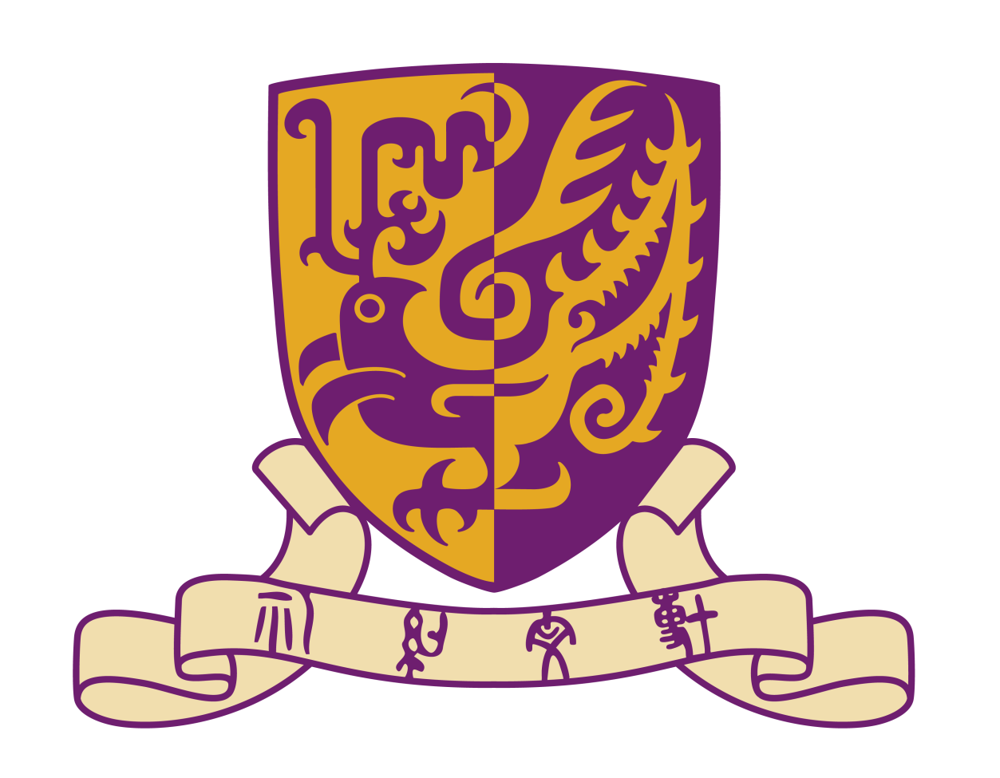

To Explore More...
Siyang Chen
Intergrated Circuit
(AI4)EDA
Peking University
I am a master student in the School of Electronic and Computer Engineering at Peking University, Shenzhen.
My research focuses on AI4EDA, leveraging AI to address the problems that are difficult to solve with traditional EDA algorithms and significantly improving the efficiency of chip design.
The ultimate goal is to construct an AI-rooted EDA flow that achieves full-coverage automatic generation from spec to layout.
Education
-
Peking University
Master of Engineering(M.Eng)
- School of Electronic and Computer Engineering
- Supervised by Prof. Lining Zhang
- Focusing on AI for Electronic Design Automation (AI4EDA) & Device Modeling
2026.09 - Present
-
Sun Yat-sen University
Bachelor of Engineering(B.Eng)
- School of Electronics and Information Technology (School of Microelectronics)
- Focused on EDA & Analog Circuit Design
- Awarded the National Scholarship
2022.09 - 2026.06

-
Jinshan Middle School
- A place with countless memories...
2019.09 - 2022.06
Research Interests

Interpretable AI
Developing methods to understand and explain the decision-making processes of deep learning models, particularly in natural language processing tasks.

Fair Machine Learning
Investigating techniques to identify and mitigate biases in AI systems, ensuring equitable outcomes across different demographic groups.

Human-AI Collaboration
Designing interactive systems that leverage the complementary strengths of humans and AI to solve complex problems more effectively.

Low-Resource NLP
Creating robust language models that can perform well on languages with limited training data through transfer learning and cross-lingual approaches.
Selected Publications
-
Understanding Context in Neural Language Models Through Attention Visualization
Neural Information Processing Systems (NeurIPS), 2024
-
Adaptive Learning Frameworks for Few-Shot Natural Language Understanding
Association for Computational Linguistics (ACL), 2023
-
Mitigating Bias in Large Language Models Through Adversarial Training
International Conference on Machine Learning (ICML), 2023
-
Cross-Lingual Transfer Learning for Low-Resource Languages
Conference on Empirical Methods in Natural Language Processing (EMNLP), 2022
Internships
-
Research Assistant
The Chinese University of Hong Kong - ChatEDA Lab
- Supervised by Dr. Zhuolun (Leon) HE & Prof. Bei Yu
- Exploring LLM × EDA
- TBD
2022.09 - Present

Get In Touch
Email: chensy298@mail2.sysu.edu.cn
Address: Peking University, Nanshan District, Shenzhen